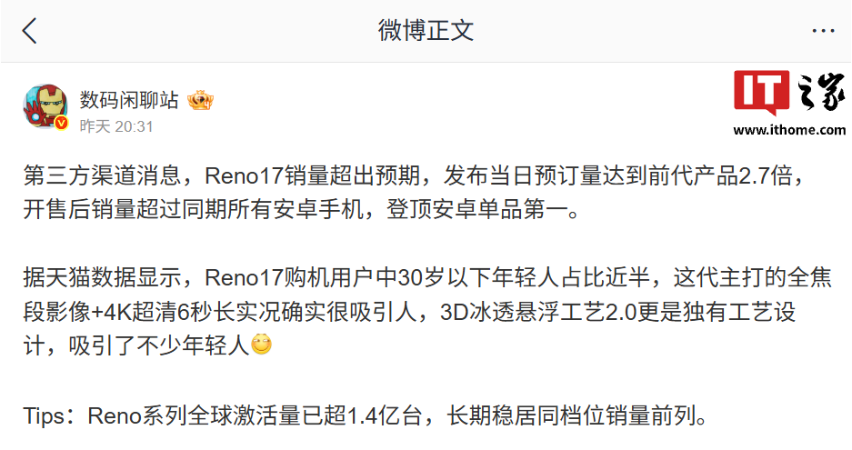
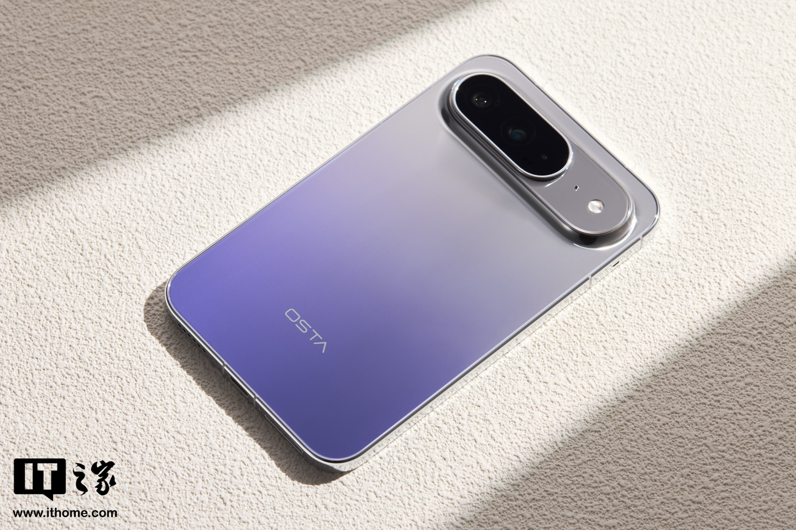
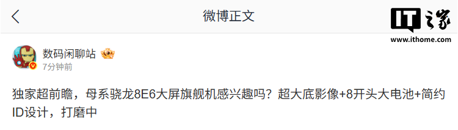
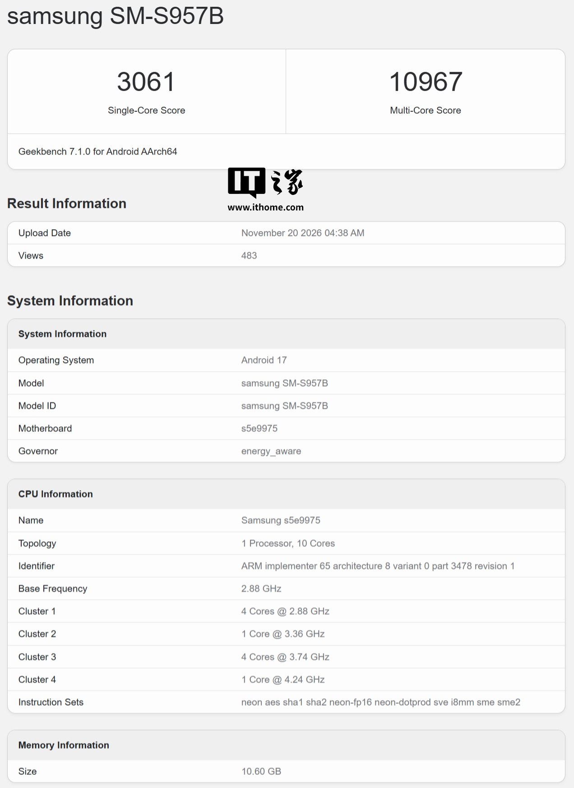
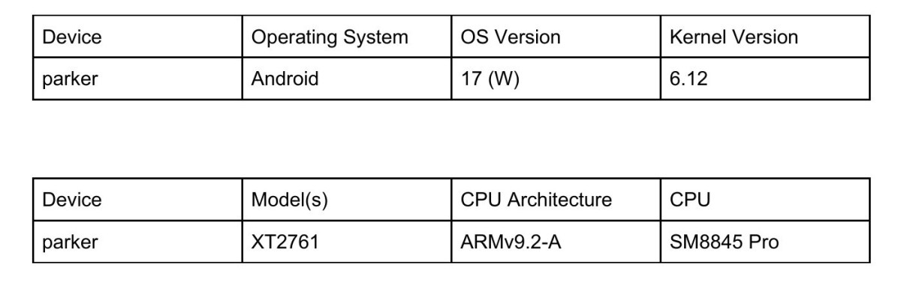
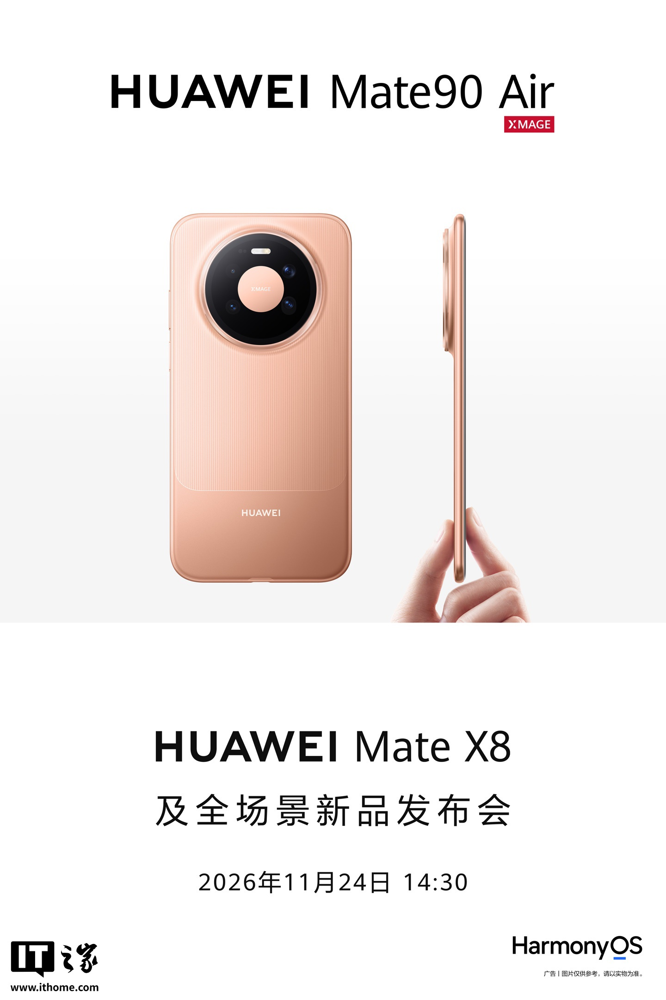
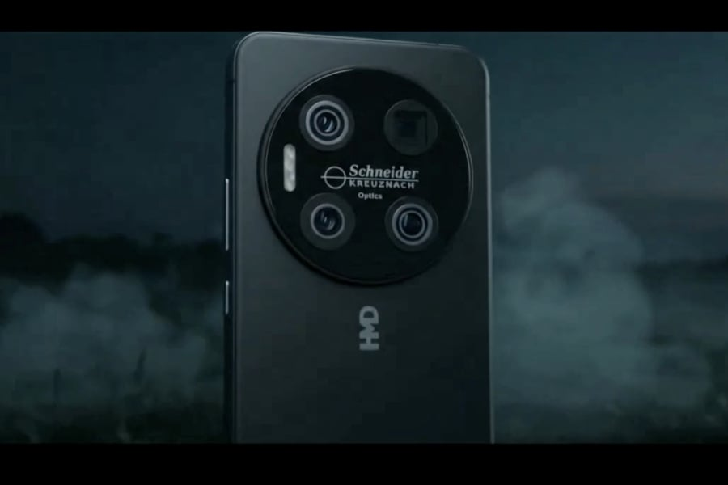

뉴스
기술의 변화, 매일 한눈에.
카메라 · 스마트폰 · AI, 해외 테크 소식을 모아 전합니다.
최근 발행2026-11-23
새로 들어온 소식

최신 뉴스
전체 4,537개 기사
OPPO Reno 17 시리즈 신제품 판매량 예상치 초과, 출시 후 동기간 안드로이드 스마트폰 중 단일 제품 1위 달성

Nomadic 드론, 고압 전선에서 충전 가능, 각 드론 25km 전력망 모니터링 담당
가성비 좋은 게이밍 스마트폰 추천: 레노버 리전 Y70, 2천 위안대 최고 사양
IT 모닝 브리핑 1122: 다른 제조사들도 바 타입 스마트폰 출시 고려 중; Anthropic 연구원, 2027년 말 AI가 최고 전문가 수준에 도달할 것으로 예측; Huawei 싱망 O1 Pro, 5499위안부터 시작하는 가격으로 논란...

iPhone 20 Pro 유출, 200MP 메인 카메라 및 쿼드 커브드 디스플레이 탑재 예상

Huawei 싱망 첫 스마트폰 OSTA O1 Pro 수리 부품 가격 공개: 스크린 899위안부터, 메인보드 3449위안부터

천만 대 판매 돌파: Huawei Mate 80 시리즈 스마트폰 판매량 1천만 대 돌파, 표준 모델 비중 58% 육박

Apple 최초 폴더블 디스플레이 스마트폰 iPhone Duo, 100억 위안 보조금 시작, 전자상거래 플랫폼에서 1,000위안 할인된 14,499위안부터 판매
AI 전장 인식 기능 게이밍 스마트폰 추천: 리전 Y70, 차세대 AI 전장 전용 모델

Youku '식신·백주대전', Canon CINEMA EOS 시리즈로 100인의 셰프 경쟁 기록

Xiaomi 18 Max, 스냅드래곤 8E6 대화면 플래그십 스마트폰 개발 중
vivo S60t 스마트폰 출시: 스냅드래곤 7 4세대 프로세서, 12GB RAM, 3199위안부터

글로벌 버전 Samsung Galaxy S27 Pro 스마트폰 벤치마크 유출: Exynos 2700 칩, 12GB RAM

Pixel 11 Pro XL 프로토타입 스마트폰 유출, Google은 온도 측정 및 알림 표시등 "두 가지 모두" 계획

모토로라 최초의 와이드 폴더블 Razr Flex 스마트폰 유출, Qualcomm 미발표 SM8845 Pro 칩 탑재

iPhone 18 및 iPhone Air 2 OLED 생산 1월 시작 예정

남아프리카 개발자, Win32 및 Linux 바이너리 프로그램과 호환되는 독자 개발 OS 'Impossible OS' 발표: 2년 후 공개 예정

Huawei Mate X8 폴더블 스마트폰, 블랙/화이트 두 가지 색상으로 11월 24일 공개

Huawei Mate 90 Air 스마트폰, 기린 9020 칩 탑재, 두께 6.58mm

HMD, 슈나이더 크로이츠나흐 브랜딩의 새로운 퓨어뷰 카메라 스마트폰 예고

HMD, 쿼드 카메라 모듈 탑재한 이미징 스마트폰 예고: 슈나이더와 협력하여 PureView 브랜드 부활
검색 결과가 없습니다
다른 검색어를 입력하거나 필터를 초기화해 보세요.